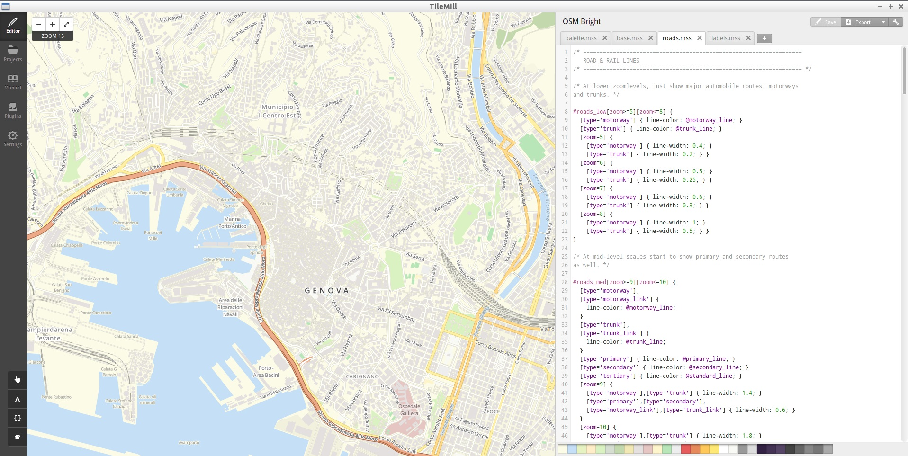

Cos'è OpenStreetMap?
- Collaborazione: La "Wikipedia delle mappe", nata nel 2004
- Community: Più di due milioni di utenti registrati
- Apertura: Licenza ODBL
Servizi commerciali

- La disponibilità di dati abilita business
- MapBox: piattaforma per mappe personalizzate
Applicazioni
- ODL Studio: piattaforma per logistica e trasporti
- Qgis: software GIS
- Scout: navigatore per smartphone
- Mapillary: concorrente di Street View crowdsourced
Emergenze umanitarie
- Humanitarian OpenStreetMap Team
- Tifone Haiyan (Filippine, 2013)
- Emergenza Ebola (Africa Occidentale, 2014)
Engagement della comunità e formazione
Contributi tramite segnalazione
- Note: annotazioni georeferite sulla mappa
- Map feedback: segnalazioni gestite da provider
Modifica dei dati
- JOSM: editor desktop
- iD: editor web
Comunicazione
- Mailing list
- Wiki
- Pagine social
Raduni "fisici"
- Convegni: State of the Map
- Mapping party
- Meetings: Maptime, Missing Maps e simili
Formazione: un esempio
- Presentazione: punti di forza e licenza
- Metodi di raccolta dati
- Integrazione di dati aperti
- Modifica dati (editor)
- Riutilizzo dei dati (casi di studio)
- Visualizzazione dei dati (mappe) e applicazioni